AWARE
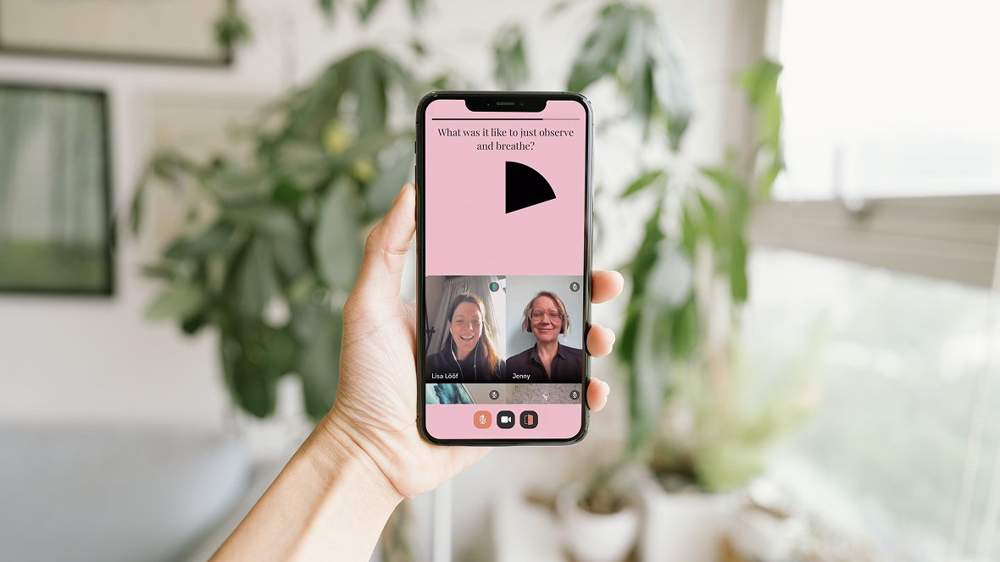
A school project from the course Service Design, where I got to work with a real case and a real company.
Aware is an app for personal growth, created by the 29k Foundation. It offers evidence-based exercises and reflection tools to help users feel better in their daily lives.
Aware sees the highest user satisfaction in its live sessions — guided online group exercises — but many users hesitated to participate. Our task was to understand why and find ways to lower this barrier.
Experience map: Ran a workshop with AWARE to define the target group, experience, and purpose — creating a clear direction for the design process.
User interviews & observation: Conducted 19 interviews with both existing users and non-users, including observing 8 non-users in real time during onboarding, to uncover motivations, behaviors, and genuine friction points.
Behaviour types: User studies revealed two behavior patterns — Security Seekers and Progress Seekers — which guided our design decisions.
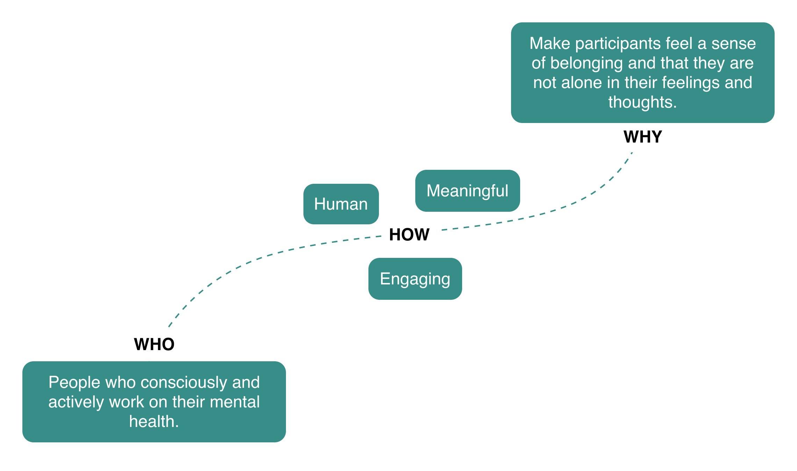
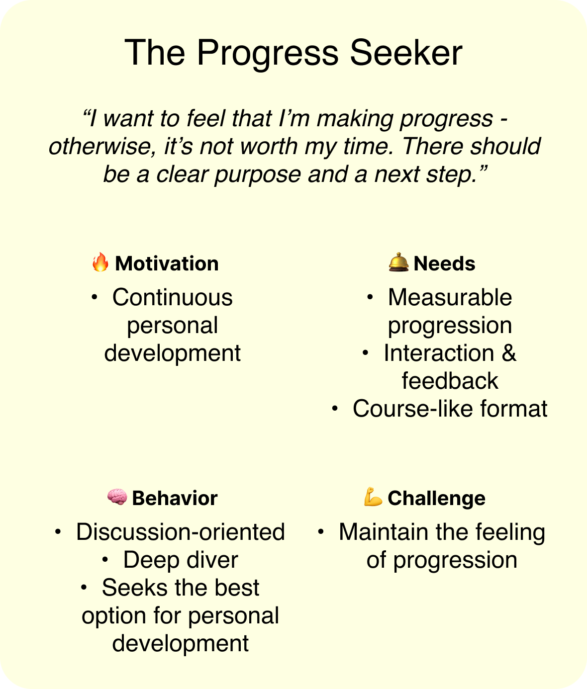
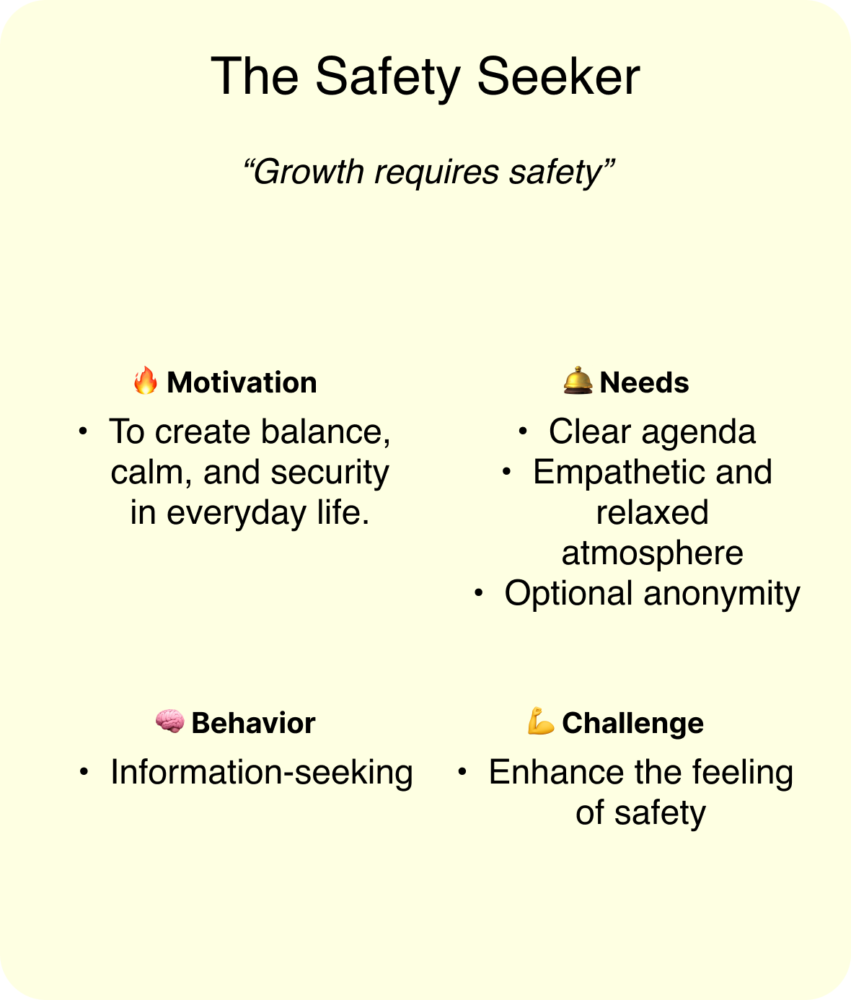
Explored solutions through brainstorming and design studio workshops, generating and evaluating concepts collaboratively. Moved from lo-fi wireframes to test and validate ideas, before refining the final design into hi-fi wireframes in Figma for handoff.
Validated the design through guerrilla testing and five controlled observations — refining information, icons, and usability based on user feedback.
The solution was documented and handed over to Aware.
We developed solutions based on insights, behavior types, and the guiding principles Human, Meaningful, and Engaging. Seven concepts were presented to AWARE and prioritized together based on user needs, project goals, and organizational constraints. Ultimately, we focused on the five solutions considered most relevant to explore further.
Problem: Users didn't understand that the button registers interest in live sessions, causing confusion.
Solution: Update the button copy to "Interested" for clarity and better usability.
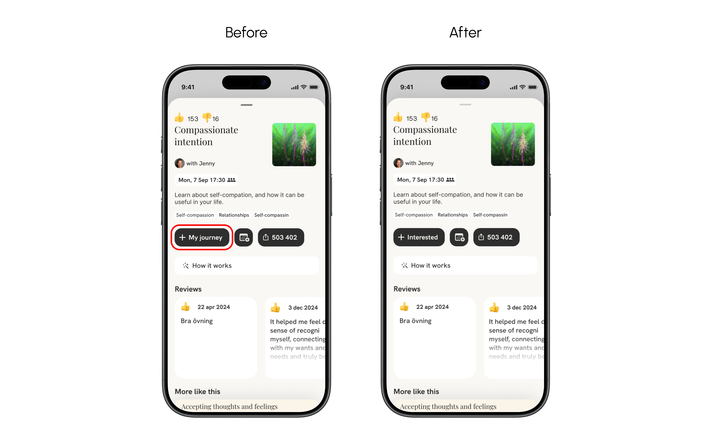
Problem: Several users reported that the information about live sessions was unclear, which caused concern for those seeking security and frustration for those seeking growth.
Solution: Clear, reassuring guidance on session flow and participant expectations.
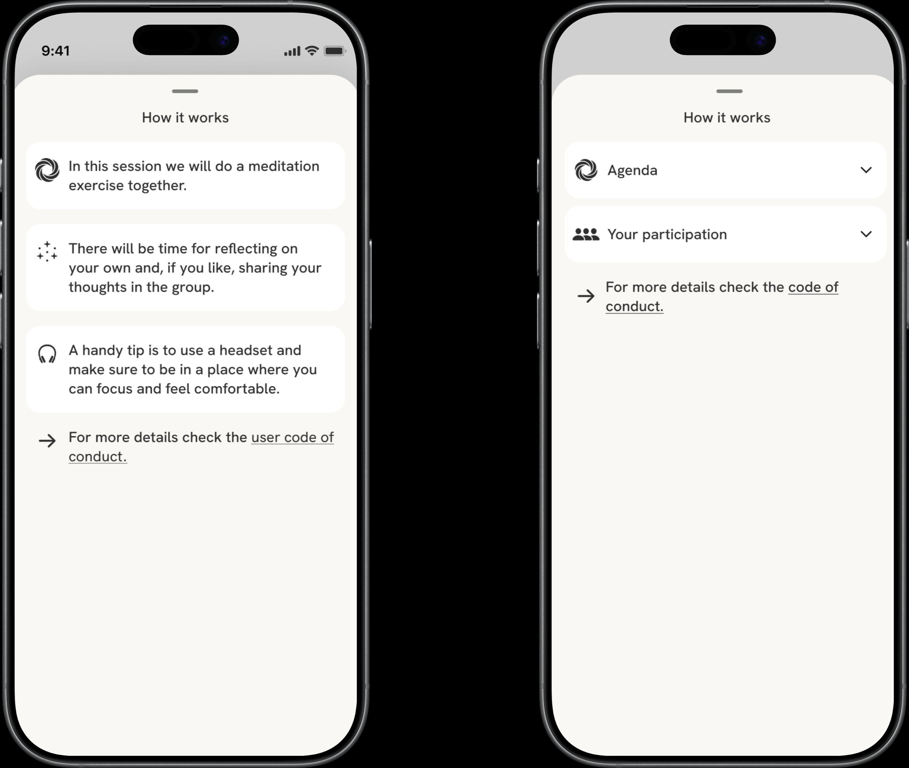
Problem: Users misunderstand the live session setup, which may cause concern for those seeking security and frustration for those seeking progression.
Solution: A short video explaining the setup, agenda, and facilitator introduction to create structure, clarity, and trust.
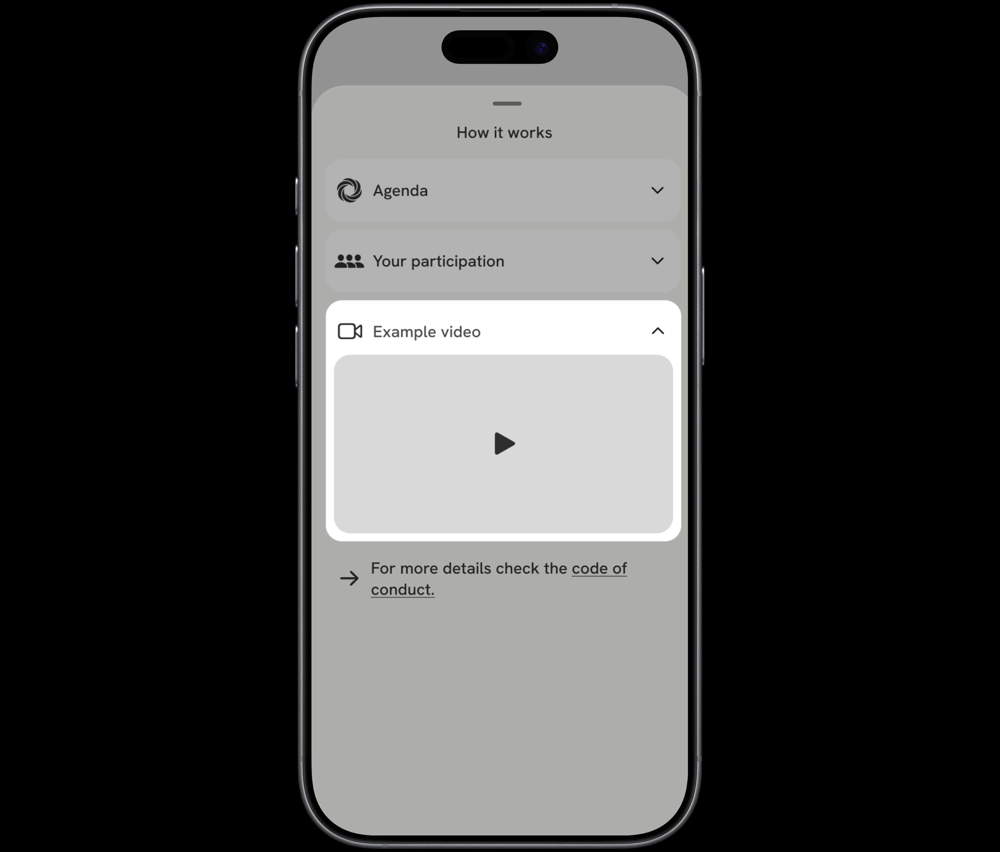
Problem: Several users found the button icon confusing and misinterpreted it as a magic wand or an AI feature.
Solution: Replace the icon with a recognizable information symbol ("i").
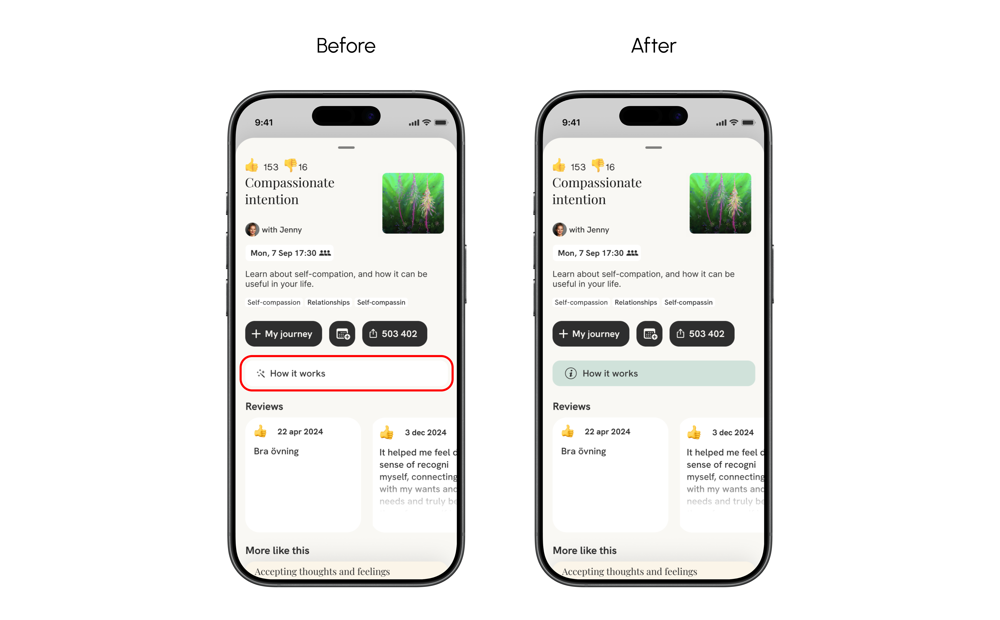
Problem: AWARE already refers to research showing that group-based exercises are more effective than individual ones, but this evidence is not clearly communicated. While users were not discouraged by the lack of evidence, clearer references would increase trust, security, and motivation to participate.
Solution: Clearly communicate evidence behind the group format to strengthen confidence, trust, and motivation to join live sessions.
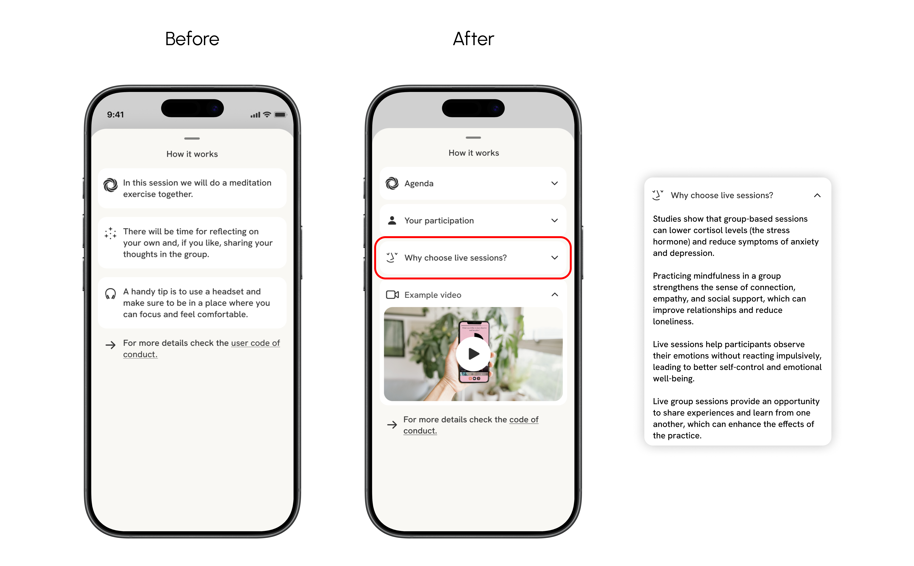
The project resulted in solutions grounded in insights from both research and usability testing. I learned how small details in language and presentation can impact users' sense of security and motivation, and how important it is to test ideas with users to ensure they actually work.
I also realized that research does not always lead to solutions that can meet every user need. AWARE had clear boundaries for what could be explored further, both due to resource constraints and to ensure the service does not resemble therapy. This gave me a clear understanding of how UX work involves balancing user needs with organizational constraints.
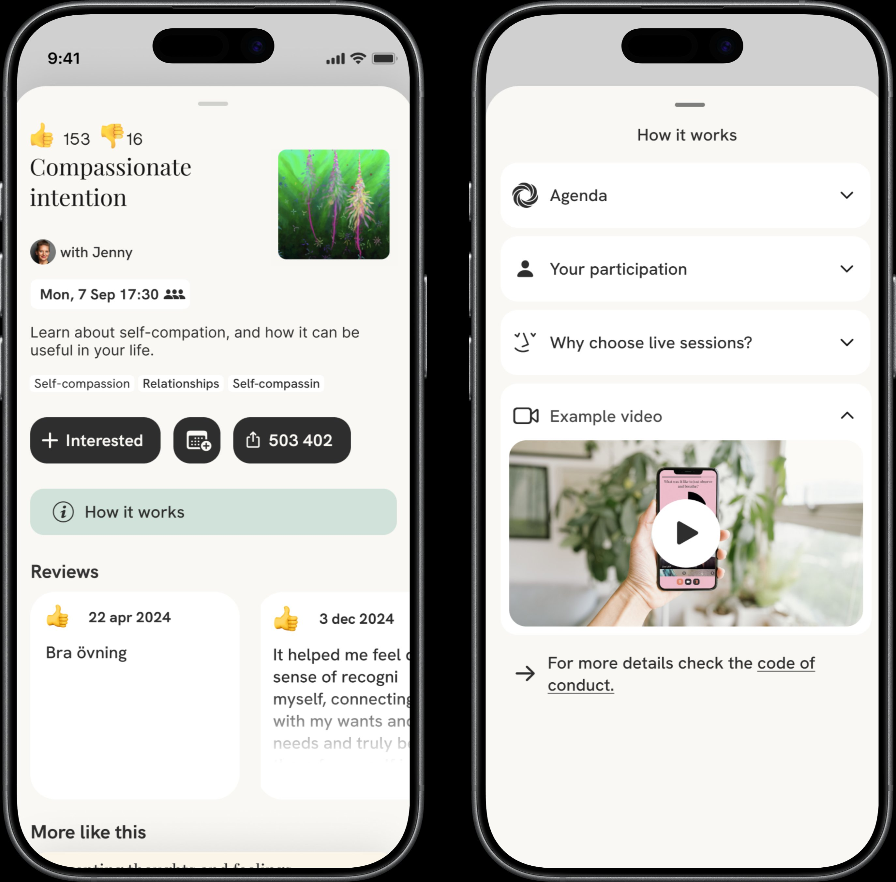
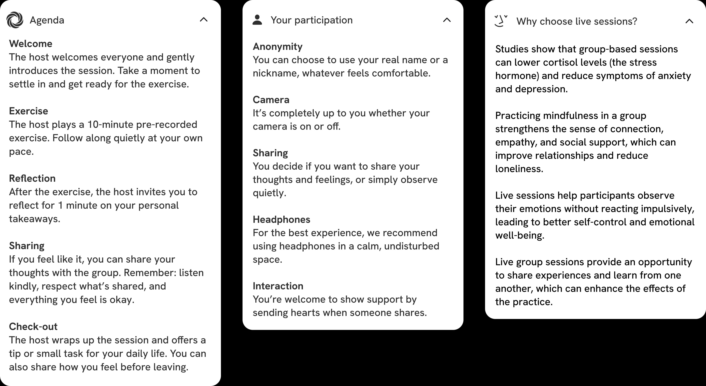